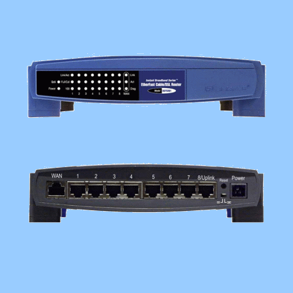
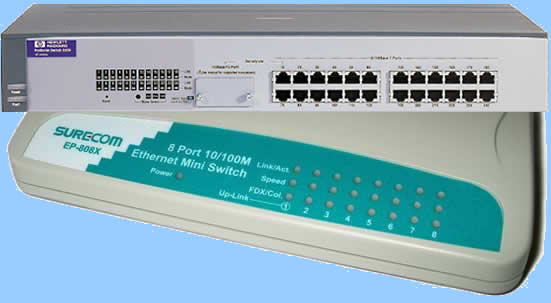

Мрежови интерфейсни карти
Най-основният хардуер, необходим за свързване на един компютър в мрежа, е мрежовата интерфейсна карта, наричана също мрежов адаптер или просто мрежова каpтa. Мрежовите карти съществуват под няколко форми, които са дискутирани в секцията избиране на мрежова карта.
Мрежовата карта обикновено е устройство от физическия слой, а драйверите за нея (софтуерът, осъществяващ връзката между картата и операционната система на компютъра) работят в каналния слой на OSI модела.
Ролята на мрежовите карти в мрежовите комуникации
 За комуникиране по мрежа винаги се изисква някакъв вид мрежов интерфейс.Мрежовата интерфейсна карта е основният хардуерен компонент в мрежовите комуникации. Тя преобразува паралелния сигнал, произведен от компютъра, в серийна (последователна) форма, която се изпраща по мрежовия кабел. Единиците и нулите на двоичната комуникация се преобразуват в електрически импулси, светлинни импулси, радиовълни или каквато и да е друга схема за предаване на сигнали, използвана от преносната среда.
За комуникиране по мрежа винаги се изисква някакъв вид мрежов интерфейс.Мрежовата интерфейсна карта е основният хардуерен компонент в мрежовите комуникации. Тя преобразува паралелния сигнал, произведен от компютъра, в серийна (последователна) форма, която се изпраща по мрежовия кабел. Единиците и нулите на двоичната комуникация се преобразуват в електрически импулси, светлинни импулси, радиовълни или каквато и да е друга схема за предаване на сигнали, използвана от преносната среда.
Важна част от мрежовия интерфейс е така нареченият трансивър (или приемопредавател). При някои мрежови карти, като например тези за 10Base2 и 10BaseT мрежи, трансивърът е вграден в самите тях. Други, например предназначените за 10Base5 мрежи, са снабдени с интерфейс за свързване на (мрежови) устройства (attachment unit interface - AUI), представляващ конектор, към който кабелът се свързва към вьншен трансивър. Трансивърът (приемопредавателят) служи именно за приемане и предаване на сигнали.
Освен че подготвя данните за изпращане към преносната среда, мрежовата карта отговаря и за управлението на потока от данни между компютрите и преносната среда, както и за приемане на входящите данни. На снимката е показана една типична PCI мрежова карта, предназначена за 100BaseT мрежа.

Избиране на мрежова карта
Когато избирате мрежова карта за даден компютър, трябва да вземете предвид следните неща:
- Мрежова архитектура
Мрежовата карта трябва да може да работи със съществуващата технология за предаване. Въпреки това е възможно да се използва филтър на преносната среда {media filter), който ви позволява например да използвате Token Ring карта в Ethernet мрежа.
- Тип на преносната среда
Ethernet мрежите могат да използват дебел коаксиален кабел (10Base5), тънък коаксиален кабел (10Base2) или кабел с усукана двойка (10BaseT). Конекторът на картата трябва да съвпада с буксата на кабела. Съществуват и мрежови карти за безжични или оптични мрежи.
- Скорост на предаване на данните
Ако имате 100Mbps хъбове, една 10Mbps мрежова карта няма да работи с тях. Можете обаче да поставите двускоростни компоненти (било то мрежови карти или хъбове), които работят със скорост или 10Mbps илн 100Mbps.
- Тип на свободен разширителен слот
Имате ли свободен ISA или PCI слот? Дали компютърът е лаптоп и трябва да използва PCMCIA (т.е. PC Card) интерфейс? Нуждаете ли се от специална карта, която се свързва към сериен или SCSI порт? .
Типове разширителни шини
Шината за данни представлява канал за предаване, разположен на дънната платка на компютъра. Сигналите се приемат от или предават към всяко устройство, свързано към този канал. Съществуват няколко шинни архитектури, за които се произвеждат мрежови карти:
- ISA (Industry Standard Architecture - стандартна за индустрията архитектура)
- EISA(Extended ISA - разширена ISA)
- PCI (Peripheral Component Interconnect - свързване на периферни компоненти)
- MCA (Micro Channel Architecture)
- PCMCIA (Personal Computer Memory Card International Association; нарича се още PC Card)
Съществуват и мрежови карти, които се свързват към SCSI шина. Има също USB (universal serial bus - универсална серийна шина) модели.
Също така трябва да отбележим, че дънните платки на някои компютри притежават вградени мрежови адаптери, т.е. компонентите на мрежовата карта се намират на самата дънна платка
- Операционната система
Трябва да се уверите, че производителят на мрежовата карта осигурява драйвери за използваната от вас операционна система. Ако използвате някоя от операционните системи Windows, погледнете списъка Microsoft Hardware Compatibility List (HCL) на адрес www.microsoft.com, където са изброени тестваните с операционната система мрежови карти.

Сложни конектори
Простите устройства за свързване на мрежата просто съединяват кабелите; сложните вършат много повече неща. Например те могат да усилват сигнала, преди да го предадат нататък, и дори да го конвертират от един тип преносна среда за друг.
В следващите секции дискутираме следните типове сложни конектори:
- Конвертори на преносната среда
- Повторители
- Активни/интелигентни хъбове
- Конвертори на преносната среда
Конверторите на преносната среда се наричат също адаптери за преносна среда (media adapters) или транслатори на преносна среда (media translators). Те се използват, за да конвертират един сегментен тип в друг; например те могат да конвертират 10Base2 в 10BaseT, 100BaseT Ethernet в оптично влакно или Token Ring в оптично влакно.
- Повторители
 Повторителят свързва два мрежови сегмента или служи за наставяне на кабел. Само че за разлика от цилиндричния конектор, повторителят не прехвърля просто сигнала от единия кабел към другия - той го регенерира. Поради тази причина, ако сигналът е отслабнал поради ефекта на затихването, той се усилва, а ефективната дистанция на кабела се увеличава.
Повторителят свързва два мрежови сегмента или служи за наставяне на кабел. Само че за разлика от цилиндричния конектор, повторителят не прехвърля просто сигнала от единия кабел към другия - той го регенерира. Поради тази причина, ако сигналът е отслабнал поради ефекта на затихването, той се усилва, а ефективната дистанция на кабела се увеличава.
Повторителите не филтрират преминаващите през тях данни. Те регенерират всички сигнали, включително бродкастните съобщения, шума и смущенията, предавайки ги нататък. На снимката епоказан повторител за коаксиален кабел.
- Концентратори (Активни и интелигентни hub-ове)
Hub, или както е прието в България, концентратор, представлява от себе си многопортов (от 4 до 16 и повече) повторител (repeater) на мрежа с автоматична сегментация, предназначен най-вече за свързване на отделни работни места, оборудвани с мрежови карти, в една мрежа, като отделните работни места могат да работят под управлението на различни операционни системи и да бъдат от различен тип (работещи на различна скорост, например). Всички портове на концентратора по правило имат един и същ приоритет, така че при получаването на сигнал на единия от портовете концентратора го препредава към всички свои активни портове.
При положение, че логиката на концентратора открие някаква неизправност във някой от подвключените към портовете мрежови сегменти, концентраторът автоматично се изключва, като след като при някой от следващите цикли установи, че повредата е отстранена, отново започва да функционира нормално.
 Концентраторите са автономни устройства, които могат да бъдат свързвани едно с друго с цел увеличаване на физическия брой подвключени устройства и разширяване топологията на една (хетерогенна) мрежа. Hub-овете отговарят на стандарта IEEE 802.3, работейки в съответствие с ниво 1 (физическо) на модела OSI (Open System Interconnect), което ще рече че те не се влияят от типа на протоколите от по-високо ниво. Процесът, при който концентраторът изключва някой от портовете при откриване на неизправност се нарича сегментация.
Концентраторите са автономни устройства, които могат да бъдат свързвани едно с друго с цел увеличаване на физическия брой подвключени устройства и разширяване топологията на една (хетерогенна) мрежа. Hub-овете отговарят на стандарта IEEE 802.3, работейки в съответствие с ниво 1 (физическо) на модела OSI (Open System Interconnect), което ще рече че те не се влияят от типа на протоколите от по-високо ниво. Процесът, при който концентраторът изключва някой от портовете при откриване на неизправност се нарича сегментация.
Мрежите, в които се използват най-често концентратори, са на базата на кабели с усукана двойка (UTP) - 10Base-T или 100Base-TX/T4. Има концентратори за мрежи 10Base-2 с коаксиален кабел и 10Base-F с оптичен кабел, както и други. Десет-мегабитовите хъбове често имат портове с конектор RJ-45, така и за коаксиален кабел  (BNC) или AUI, което позволява сегментите с коаксиален или оптичен кабел да се използват като главна магистрала (Backbone) между концентраторите.
(BNC) или AUI, което позволява сегментите с коаксиален или оптичен кабел да се използват като главна магистрала (Backbone) между концентраторите.
Основната (и съществена) разлика между концентраторите (Hub) и значително по-разпространените напоследък комутатори (Switch) е в това, че концентраторите нямат възможност да буферират пропусканите през тях пакети с данни, а комутаторите - могат. Това на практика довежда до по-високи скорости на обмен на данни в мрежи, изградени с комутатори, отколкото с концентратори.
"Неумението" на концентратора да буферира пакетите води и до невъзможността му да синхронизира работещи на различни скорости портове, макар че не е изключено да има разработени чипове, които да се справят успешно с този проблем. Липсата на синхронизация по скорост довежда до там, че ако към концентратора има комутирани работни станции, работещи при скорост 10 и 100 мегабита/секунда, всички портове на концентратора ще работят на 10 MBit.
Активните хъбове се наричат също многопортови повторители (multiport repeaters), защото разполагат с множество портове (подобно на пасивните хъбове) и регенерират сигнала, идващ от даден порт, преди да го предадат по друг порт (подобно на повторител). Активните хъбове изискват електрическо захранване.
Интелигентният хъб е специален тип активен хъб. Той не само регенерира сигнала, но също така разполага с процесор, позволявайки ви да извършвате диагностика и да разберете дали има проблем с даден порт. Хъбовете работят във физическия слой на референтния OSI модел.
- Мостове
Един традиционен мост (наричан също прост прозрачен мост) свързва два мрежови сегмента и извършва филтриране на трафика, като се базира на МАС (media access control) адресите в пакетите. Когато се използва правилно, това ви позволява да намалите претоварването.
Един добър пример за използване на мост (bridge) e безжичният Ethernet мост, който превръща сигналите от жично Ethernet устройство за нуждите на безжични компютърни мрежи. Bridge-ът и USB адаптерите понякога са наричани wireless media adapters. Те позволяват на устройства за Wi-Fi да използват Ethernet или USB физически устройства.
За разлика от повторителите, някои мостове могат да свързват мрежови сегменти, използвайки различни методи за достъп до преносната среда, стига да използват един и същ мрежов протокол (например TCP/IP). Те се наричат транслационни мостове (translation bridges) или капсулиращи мостове (encapsulation bridges).
В една мрежа може да има повече от един мост. Това осигурява отказоустойчивост, но е свързано с риск да се получи междумостово зацикляне (bridging loop), което възниква при наличие на няколко различни пътя между две точки.
В последно време мостовете се използват все по рядко като вместо това се използват комутатори (swittches).
- Маршрутизатори (routers)
Маршрутизаторите свързват отделни мрежи една с друга. Това може да се случи в една локална мрежа (в който случай отделните мрежи се наричат подмрежи) или между независими една от друга мрежи, както е например при глобалния Интернет.
Подобно на моста, маршрутизаторът филтрира трафик. За разлика от моста обаче, маршрутизаторът прави това, използвайки логически мрежови адреси (IP или IPX адреси) вместо физическите хардуерни адреси. Маршрутизаторите са по-интелигентни от мостовете; те вземат сложни решения, избирайки най-добрия маршрут до дадена дестинация измежду множество възможни пътища.
ЗАБЕЛЕЖКА: Специализираните маршрутизиращи устройства всъщност са компютри със специално предназначение; те съдържат микропроцесори и изпълняват своя собствена операционна система. РС-тата също могат да бъдат конфигурирани да действат като маршрутизатори, ако операционната система поддържа IP или IPX препращане.
Маршрутизаторите поддържат маршрутни таблици, съдържащи мрежовите адреси на други маршрутизатори. Един маршрутизатор трябва да притежава поне два мрежови интерфейса, защото той служи като шлюз (gateway) между мрежи. Адресът на интерфейса на маршрутизатора, който обслужва конкретна подмрежа, се нарича подразбиращ се шлюз (default gateway) за тази подмрежа.
Маршрутизаторите могат да се използват за свързване на множество мрежи в една по-голяма, както и да разделят една голяма мрежа на няколко по-малки.
Когато в дадена мрежа съществуват множество пътища, мостът избира един от тях и винаги използва него, за да достигне до специфична дестинация. Маршрутизаторите взимат под внимание всички налични пътища за всеки изпратен пакет и взимат решение за всеки отделен пакет. По този начин, ако даден маршрут е много натоварен в дадено време, маршрутизаторът избира друг по-ефективен маршрут.
- Комутатори (switches)
Основната функционалност на един суич (комутатор) е измамно проста: да избере път, по който да изпрати данните до тяхното местоназначение.
Комутаторите позволяват всяка една работна станция да предава данните през комуникационната среда без да се конкурира с другите. Основната разлика между концентратора (hub) и комутатора (switch) идва от възможността на последния да буферира пакетите с данни.
Ethernet суичовете се превръщат в популярно решение за свързване, при това поради добра причина. Те увеличават производителността (скоростта) и са сравнително евтини.
Суичовете използват една от двете схеми за комутиране: 
- Комутация без буфериране на пакетите (cut-through switching) - Суичът започва да препредава пакета до неговото местоназначение, преди пакетът да е пристигнал изцяло. Този метод е по-бърз, но може да доведе до преминаването на лоши пакети.
- Комутация с промеждутъчно съхранение (store-and-forward switching) - Суичът не изпраща пакета, докато не го получи напълно и не провери неговия интегритет. Това е по-бавно, но по-надеждно.
Почти всички комутатори, за разлика от концентраторите, имат изведена върху горния капак или лицевата страна на кутията светодиодни индикации за режима на работата на портовете.